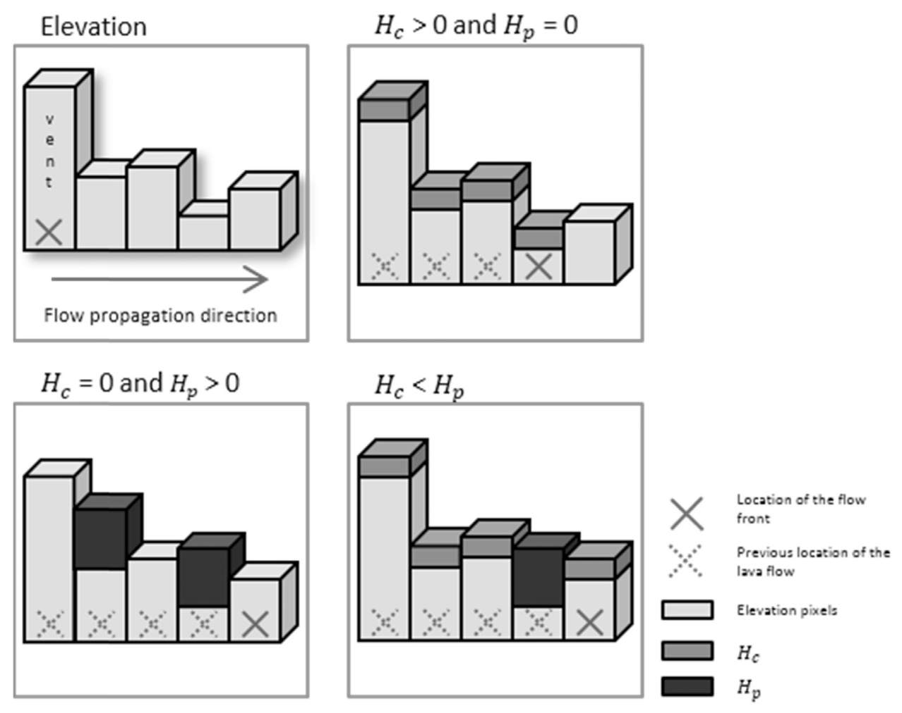
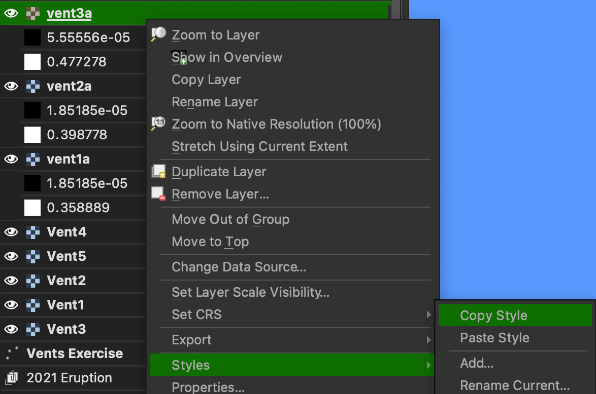
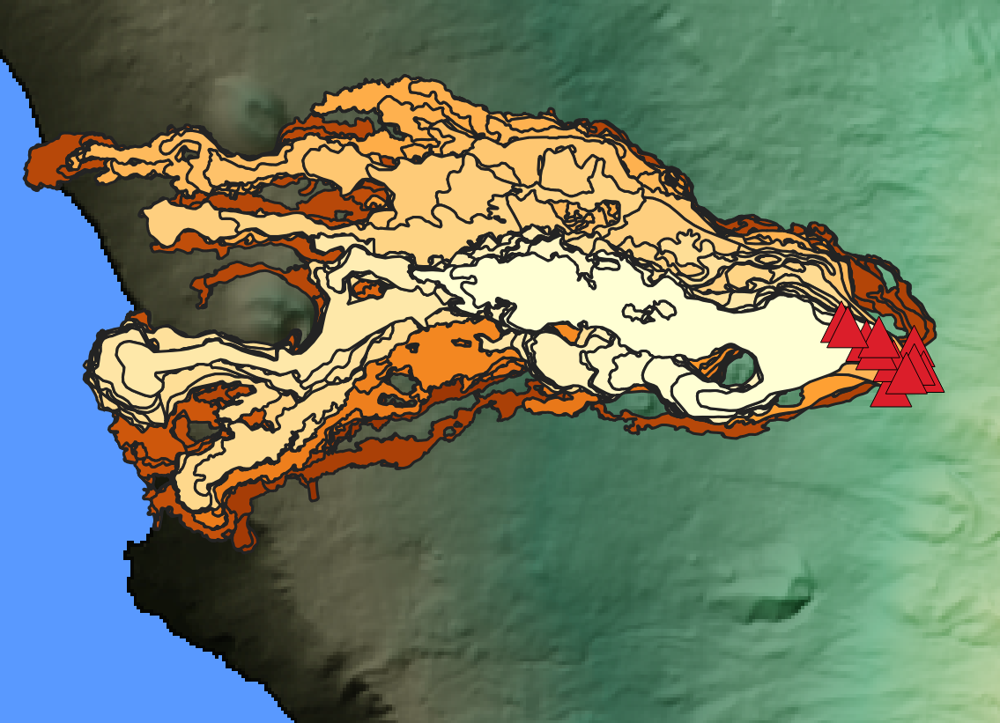

Q-LavHA
With the knowledge gained on topographic controls and modeling from the previous exercise, we will now look at Q-LavHA1 as an alternative approach for probabilistic hazard assessments for lava flow inundation. This part of the exercise assumes that you have already installed both QGIS and Q-LavHA. The Q-LavHA user manual contains some important information about how to configure the model and the data, so we encourage you to have a look at it at some point.
Objectives
- Review the theory behind
Q-LavHA. - Understand the main assumptions behind the use of the model.
- Perform probabilistic lava flow modeling for several vents in La Palma.
- Account for the uncertainty in vent locations in hazard assessments.
Theory behind Q-LavHA
Flow direction
The starting philosophy behind Q-LavHA is similar to the analysis performed for the path of steepest descent approach: using the DEM, the model will try to estimate where the flow will go next based on the maximum \(\Delta h\) of the surrounding pixels. However, Q-LavHA uses a probabilistic approach to estimate this flow direction.
Firstly, as we saw, a lava flow is a Non-Newtonian fluid with yield strength, which means that it can escape the steepest path and propagate laterally, fill depressions and overcome topographical obstacles. To account for that, Q-LavHA introduces 2 corrective factors:
- \(H_c\), representing the flow thickness.
- \(H_p\), representing the ability of a flow to inflate.
Together, these two parameters help avoiding the modelled flow getting stuck in topographic low and will allow it to spread laterally, as we saw the 2021 flow of La Palma was able to do.
Secondly, the initial estimation of path of steepest descent is performed stochastically similarly to what we previously looked at. Conceptually, one Q-LavHA output is constituted by the simulation of thousands of lava flows (1500 by default). Each lava flow simulation applies a path of steepest descent approach, but the selection of the next pixel is performed slightly differently:
- At each new pixel, the \(H_c\) and \(H_p\) corrections are applied to the active pixel according to Figure 1.
- Instead of selecting the pixel with the largest \(|\Delta h|\) as previously seen,
Q-LavHAassigns a relative probability of flow inundation to each surrounding pixel (see box below). - Using a random number generator,
Q-LavHAstochastically sample which pixel will be inundated next. With this approach, the pixel with the largest \(|\Delta h|\) has the highest probability of being inundated next, but other pixel also have a non-null probability of inundation.
Path of steepest descent in Q-LavHA
By default, Q-LavHA computes a relative probability across the 8 surrounding pixels using \(\Delta h^2\) according to:
If potential topographic obstacles are not overcome by the application of \(H_c\) and \(H_p\) around the 8 surrounding pixels, Q-LavHA extends its search to the next 16 surrounding pixels. Q-LavHA then transforms these relative probabilities into a cumulative probability function \(S_i\):
A random number \(rnd\) is then drawn in the \([0, 1[\) interval, and used to select the corresponding pixel in the range \([S_{i-1}, Si[\):

Flow length
Flow length is a critical metrics of lava flow hazard. However, since it depends on a complex interaction between eruption conditions at the source, flow rheology and topography through time and space, modelling the case-per-case physics of each flow is unrealistic in hazard assessment contexts. For this reason, Q-LavHA proposes three alternatives to compute maximum flow length:
- A maximum user defined length, using either Euclidean or Manhattan distances.
- A decreasing probability function based on existing flow databases.
- The cooling-limited flow model FLOWGO2.
Lava flow distance
As you can see from the geological map of La Palma, most historical flows on the island have reached the sea, so we will consider here that the flow distance is of limited importance. This assumption is however invalid in most cases. The probability function option allows you define a probability of flow length based on a mean and standard deviation of known lava flows length, which is a convenient way to treat this parameter probabilistically. Refer to the original paper1 for more information.
Probability of flow inundation
As previously seen, probability of lava flow inundation \(P\) at a given pixel \(x, y\) is generally computed as the number of inundation counts \(n_i\) normalised by the number of runs \(N_r\):
Where \(N_{r}\) is the total number of runs and \(n_{i}\) is defined as:
Depending on the modeling options adopted, Q-LavHA will slightly modify this approach. Refer to the original paper1 for more information.
Exercise
Install Q-LavHA
Start by making sure that Q-LavHA has been properly installed according to this guide. You should see this icon in the toolbar. You should also have loaded the QGIS project according to this guide.
- In
QGIS, activate theVents for Exerciselayer group.
Running Q-LavHA for single vents
These vents correspond to those indicated in the Table below. Q-LavHA requires projected UTM coordinates, which are shown in the Easting and Northing columns (x and y columns, respectively). The UTM zone for La Palma is 28N, or EPSG:3268.
| Vent | Latitude | Longitude | Easting (m) | Northing (m) | EPSG |
|---|---|---|---|---|---|
| Vent 1 | -17.83989 | 28.62507 | 222340 | 3169746 | 32628 |
| Vent 2 | -17.86626 | 28.61262 | 219728 | 3168426 | 32628 |
| Vent 3 | -17.84316 | 28.58782 | 221922 | 3165623 | 32628 |
| Vent 4 | -17.81585 | 28.60777 | 224646 | 3167772 | 32628 |
| Vent 5 | -17.84649 | 28.49699 | 221357 | 3155562 | 32628 |
Each of you has been assigned a vent. Please run the exercise only for the vent assigned to you!
Coordinate systems
Here, you are provided with input data that all have the same coordinate system. Before modeling lava flows for your own projects, make sure that you first reproject all your data to a unique CRS.
Model setup
Let's run Q-LavHA for the selected vent. For now, we will assume that we know exactly the vent location. Open the Q-LavHA window, and let's look at the parameters:
- In the
DEM Selectionbox, select theData/Lava/DEM_Qlavah.tif. In the DEM selection window, make sure you change the type of files from.ascto.tif. - As a
Vent Type, choosePointfor now. - Add the relevant
Coordinatesas specified in the table above.
-
Lava Flow Propagation: This section sets up the behaviour of the lava flow, as described in the theory section.- Leave the default values of
HcandHt. - Use the
H16option: This means that the algorithm will first search for a topographic low within the first 8 adjacent pixels, and will extend the search to the next 16 ones if not found. - Use
Probability to the square
- Leave the default values of
-
Lava Flow Length Constrain: This section defines when a lava flow stops. You can switch between the various options for an illustration of the different behaviours. As discussed above, use aManhattan Distancewith a length of10000 m. Simulations: Use aNumber of iterationsof 1500. This represents the number of simulated lava flows, or \(N_r\) in the equations above.
- Set an
Output pathand anameto the output layers. - Save the
Parameters.
Q-LavHA
You are now ready to run the simulation!
Vent geometry
Q-LavHA offers different source geometries, such as a fissure, or a vent opening susceptibility map. The choice of these options depends on the case study, and their use is described in the Q-LavHA user manual.
Styling outputs
Upon completion of the model run, the output file is directly added to the layer panel. Let's change its visualisation:
- Open the
Layer Propertiespanel by double-clicking on the output layer in theLayerspanel. - From the
Symbologytab on the left:- Under
Color Rendering, uncheck theColorizeoption. - Under
Render type, chooseSingleband pseudocolor. - Set the
minandmaxvalues to 0 and 0.5, respectively. - Change the
Color ramptoMagma
- Under
- Click ok.
The output file now shows the spatial distribution of inundation probability varying between \(\gt 0\) and \(0.5\) (i.e., 50%).
Copying layer symbology
In QGIS, you can simply copy the display properties of one layer to other layers:
- In the
Layerspanel, right-click on the layer you want to copy the style from and selectStyles > Copy style. - Now right-click on the layer you want to apply to style on and select
Styles > Paste style.

Question 1: Single-vent simulations
- In one sentence, describe what the color at any given pixel expresses.
- How do modelled flows compare to the closest historical lava flows in terms of length and width?
- Analyse and discuss the spatial distribution of inundation probability. How do they compare to the path of steepest descent?
Using several vents
In the case of fissure eruptions, one eruptive episode can consist of multiple satellite vents. This was certainly the case for the 2021 eruption of La Palma. In fact, as you can see from the 2021 Vents layer in QGIS, CEMS identified that ~10 vents opened over a 500 x 500 m area. Here, we won't attempt predicting the number or the location of each vent. Instead, we will model lava flow inundation from a grid of vents within a surface area and explore how vent location affects the lava flow simulation hazard.
Probability of vent opening
Note that with this approach, we consider an equal probability of vent opening within this area. We will consider this as an acceptable assumption for this exercise, but this is likely an over-simplification for real-case scenarios.
Define the area
We will define a potential vent opening surface as a 500 x 500 m square centered on the reference coordinates of your attributed vent. Note that UTM coordinates are in metre: you can therefore simply identify the x and y coordinates these four points by addition and subtraction:
- Lower left corner
- Lower right corner
- Upper right corner
- Upper left corner
Model setup
- From
QGISopenQ-LavHA. Most of the parameters should already be filled. Otherwise, you can use theLoad parametersoption and load a previous run. - Set a
Distance between ventsof 100 m. Since we defined a 500x500 m area,Q-LavHAwill therefore model lava flow inundation from 25 vents. - Enter the 4 coordinates defining your area.
- In the
Lava Flow Parametertab, change theNumber of Simulationsto 100. This will help save some computation time. - Make sure you change the output name.
Q-LavHA
You are now ready to run the simulation!
Apply the same symbology to the surface area runs as you did for the point run.
Question 2: Vent location uncertainty
- Compare the run with its single-vent counterpart. How do they differ and why?
Prepare your hazard maps
The raw geotiff files produced by Q-LavHA are your main hazard files. If you choose to work in QGIS you can further export them to maps using the Print Layout tool (→ doc & tutorial).
Food for thoughts
Forecasting the flows from the 2021 eruption
Compare the Q-LavHA run with the flow outlines from the 2021 eruption below. Note that the Q-LavHA run was performed using the same 500 x 500 m source area as used above.


Question 3: Interpreting hazard forecasts
- From what you know about both the 2021 eruption and the dynamics of lava flows, compare and discuss the hazard forecast and the actual deposit. What are
Q-LavHA's strengths and limitations?
Limitations
The method presented here is one amongst many attempts to estimate the hazard from lava flow inundation. This model relies on no to some degrees of physics, but inherently attempts to quantify uncertainties. It is important to recognise that although this model is useful and has been validated, it still bypasses some critical aspects of lava flows including time, effusion rates or morphology. Again, models are useful as long as used in the range of their limitations and for an appropriate purpose.
Summary
In this exercise, you have:
- Understood the philosophy behind a probabilistic model for lava flow inundation,
Q-LavHA. - Assessed the hazard of lava flow inundation using probabilistic modeling.
- Included the uncertainty on vent location in hazard estimates.
- Understood the limitations of model predictions when compared to past events.
References
-
Mossoux, S., Saey, M., Bartolini, S., Poppe, S., Canters, F., Kervyn, M., 2016. Q-LAVHA: A flexible GIS plugin to simulate lava flows. Computers & Geosciences 97, 98–109. https://doi.org/10.1016/j.cageo.2016.09.003 ↩↩↩
-
Harris, A.J., Rowland, S. FLOWGO: a kinematic thermo-rheological model for lava flowing in a channel. Bull Volcanol 63, 20–44 (2001). https://doi.org/10.1007/s004450000120 ↩